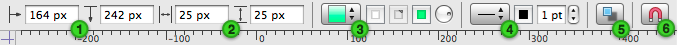

Over de linialen en de infovensterbalk
Linialen helpen u bij het plaatsen van objecten op het canvas. Als u de linialen wilt weergeven, selecteert u deze in het menu Weergave of klikt u op het bijbehorende knoppenbalksymbool.
Terwijl u een object over het canvas sleept, worden er lijnen weergegeven op de linialen om u te helpen de juiste positie te vinden.
U kunt ook handmatig hulplijnen maken door in de liniaal aan de bovenkant of zijkant te klikken, de muisknop ingedrukt te houden en sleep vervolgens naar het canvas.
Standaard vormt de linkerbovenhoek van een canvas het nulpunt (oftewel het punt waar de meetpunten van de linialen beginnen, op de coördinaten 0,0) van het canvas. Om het nulpunt te wijzigen, sleept u het vanuit de hoek waar de linialen samenkomen. (U kunt ook waarden invoeren in het infovenster Canvasgrootte, in de Nulpunt-velden.) De coördinaten in het infovenster Geometrie zijn gebaseerd op dit nulpunt.
Wanneer u tekst bewerkt, verschijnen er tabstops op de liniaal en verschijnen erboven regelaars voor de tekstopmaak. U kunt tekst opmaken, de afstand en uitlijning wijzigen of tabstops van en naar de liniaal slepen.
Wanneer u geen tekst bewerkt, bevat het gedeelte boven de liniaal regelaars voor de bewerking van basiskenmerken van geselecteerde objecten; dit is de infovensterbalk.

 De X- en Y-positie, net als in het infovenster Geometrie.
De X- en Y-positie, net als in het infovenster Geometrie.  De breedte en hoogte, net als in het infovenster Geometrie.
De breedte en hoogte, net als in het infovenster Geometrie.  Een keuzemenu voor keuze van een type vulling; drie kleurvakken die worden geactiveerd al naar gelang het type vulling dat u kiest; een draairegelaar voor de richting van lineaire kleurverlopen.
Een keuzemenu voor keuze van een type vulling; drie kleurvakken die worden geactiveerd al naar gelang het type vulling dat u kiest; een draairegelaar voor de richting van lineaire kleurverlopen.  Een venstermenu voor keuze van een type lijn, hoekstijl, type verbindingslijn en stijlen voor begin en einde van de lijn; een kleurenvak voor keuze van een lijnkleur; een veld voor de lijndikte.
Een venstermenu voor keuze van een type lijn, hoekstijl, type verbindingslijn en stijlen voor begin en einde van de lijn; een kleurenvak voor keuze van een lijnkleur; een veld voor de lijndikte.  Een knop om snel schaduwen in of uit te schakelen. U kunt voor schaduwen meer instellen dan alleen "aan" of "uit" in het infovenster Schaduw.
Een knop om snel schaduwen in of uit te schakelen. U kunt voor schaduwen meer instellen dan alleen "aan" of "uit" in het infovenster Schaduw. Een knop om verbindingen naar of vanuit andere objecten snel te activeren of deactiveren. Meer instelmogelijkheden vindt u in het infovenster Verbindingen.